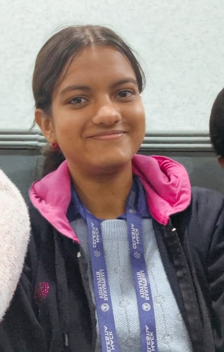

Developer | Athlete | Maker
Branch: IT (Information Technology)
Current CGPA: 8.6
Location: Tonk, Rajasthan
| Grade | Institution | Year | Result |
|---|---|---|---|
| 12th Grade | St Anjela Sophia school, jaipur | 2022 | 84% |
| 10th Grade | St Anjela Sophia school, jaipur | 2020 | 94% |
A MERN project with ML integration to help fire stations in quick decision making and resource allocation.
A Flutter and ML-kit app that helps users maintain a safe distance between the mobile screen and their eyes.